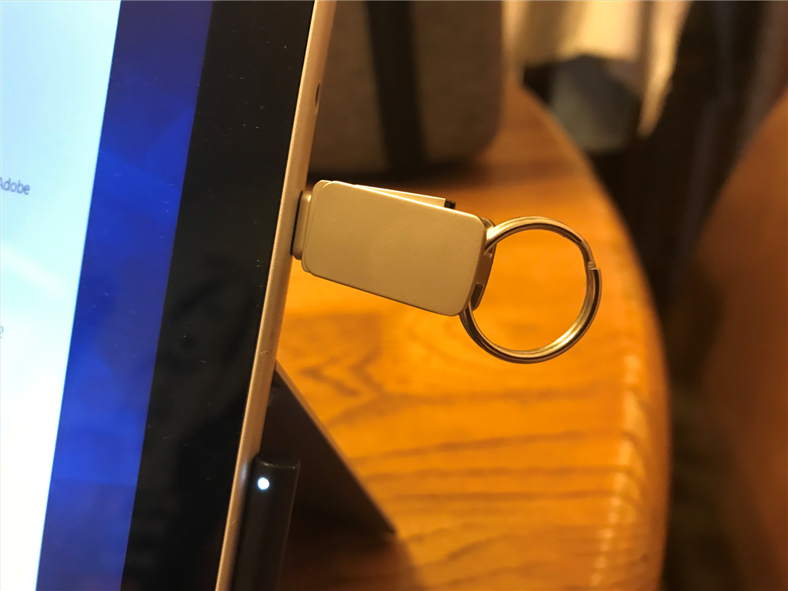

12月6日：Surface Go LTE 復活
公開日：

先日お亡くなりになった Surface Go with Advanced LTE を復活させた。
回復ドライブの作成

まず、Microsoft のサイトから回復イメージをダウンロードして USB フラッシュメモリーにコピーする。法人向けの Surface ならば以下のサイトで回復イメージをダウンロードできる。
型番とシリアルナンバーが必要。サイズは7GBちょいだった。
回復イメージは ZIP で圧縮されているので、それを展開。FAT32 でフォーマットしたフラッシュメモリに丸ごとコピーしたら完成だ。
フラッシュメモリは USB-C 接続のものを新たに買った。ハブを介せば普通の USB メモリも使えるらしいが、これからは USB-C が普及していくだろうし、専用のものを一本持っておくとスマートだ。

うちは USB/USB-C の両方を使えるものを Amazon で適当に探して買った。なにげに防水らしいから、間違って水洗便所に落としても死なない。

回復処理は10分ちょいで完了するようだ。家で使うとやっぱり Wi-Fi が不安定だが、そとで LTE 接続で使う分には今のところ快調だ。この記事も総武快速のグリーン車の中で書いている。